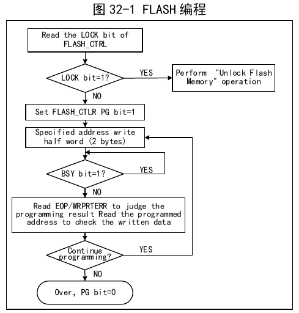
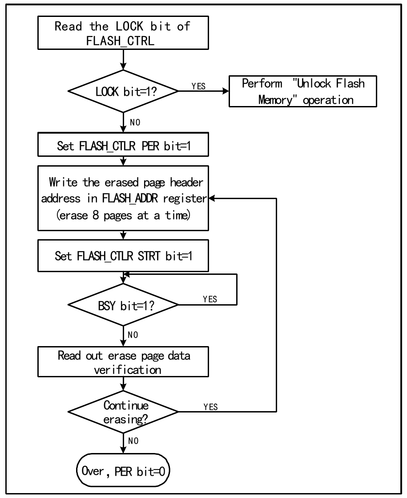
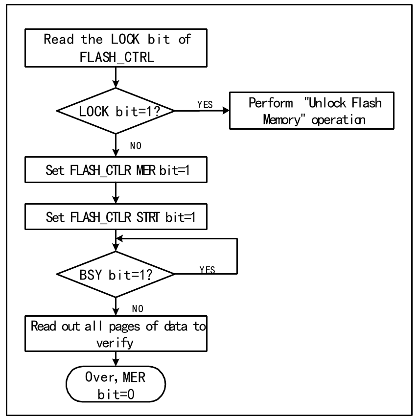

The chip's internal flash memory organization is as follows:
| Block | Name | Address Range | Size (bytes) |
|---|---|---|---|
| Main Memory | Page 0 | 0x08000000 – 0x080000FF | 256 |
| Page 1 | 0x08000100 – 0x080001FF | 256 | |
| Page 2 | 0x08000200 – 0x080002FF | 256 | |
| Page 3 | 0x08000300 – 0x080003FF | 256 | |
| Page 4 | 0x08000400 – 0x080004FF | 256 | |
| Page 5 | 0x08000500 – 0x080005FF | 256 | |
| Page 6 | 0x08000600 – 0x080006FF | 256 | |
| Page 7 | 0x08000700 – 0x080007FF | 256 | |
| … | … | … | |
| Page 3967 | 0x080F7F00 – 0x080F7FFF | 256 | |
| Information Block | System Boot Code Storage | 0x1FFF8000 – 0x1FFFEFFF | 28K |
| User Option Bytes | 0x1FFFF800 – 0x1FFFF87F | 128 |
When the chip is in read-protected state:
The FLASH enhanced read mode is applicable when the user program runs in FLASH (the user code space exceeds the CODE size space configured by the user option byte RAM_CODE_MOD[1:0] bits). Enabling this mode can improve FLASH access efficiency. To enable this mode, set the EHMOD bit of the FLASH_CTLR register to 1; at this point, read the EHMODS bit — if the EHMODS bit is 1, the enhanced read mode has taken effect. To disable this mode, first clear the EHMOD bit to 0, then set RSENACT to 1. The access clock frequency can also be selected by configuring the SCKMOD bit of the FLASH_CTLR register.
| Name | Address | Description | Reset Value |
|---|---|---|---|
| R32_FLASH_KEYR | 0x40022004 | FPEC key register | 0xXXXXXXXX |
| R32_FLASH_OBKEYR | 0x40022008 | OBKEY register | 0xXXXXXXXX |
| R32_FLASH_STATR | 0x4002200C | Status register | 0x00000000 |
| R32_FLASH_CTLR | 0x40022010 | Control register | 0x02008080 |
| R32_FLASH_ADDR | 0x40022014 | Address register | 0x00000000 |
| R32_FLASH_OBR | 0x4002201C | Option byte register | 0xXXXXXXXX |
| R32_FLASH_WPR | 0x40022020 | Write protection register | 0xXXXXXXXX |
| R32_FLASH_MODEKEYR | 0x40022024 | Extended key register | 0xXXXXXXXX |
Offset address: 0x04
| 31 | 30 | 29 | 28 | 27 | 26 | 25 | 24 | 23 | 22 | 21 | 20 | 19 | 18 | 17 | 16 |
|---|---|---|---|---|---|---|---|---|---|---|---|---|---|---|---|
| KEYR[31:16] | |||||||||||||||
| 15 | 14 | 13 | 12 | 11 | 10 | 9 | 8 | 7 | 6 | 5 | 4 | 3 | 2 | 1 | 0 |
|---|---|---|---|---|---|---|---|---|---|---|---|---|---|---|---|
| KEYR[15:0] | |||||||||||||||
| Bits | Name | Access | Description | Reset |
|---|---|---|---|---|
| [31:0] | KEYR[31:0] | WO | FPEC key, used to input the FPEC unlock key including: RDPRT key = 0x000000A5; KEY1 = 0x45670123; KEY2 = 0xCDEF89AB. | X |
Offset address: 0x08
| 31 | 30 | 29 | 28 | 27 | 26 | 25 | 24 | 23 | 22 | 21 | 20 | 19 | 18 | 17 | 16 |
|---|---|---|---|---|---|---|---|---|---|---|---|---|---|---|---|
| OBKEYR[31:16] | |||||||||||||||
| 15 | 14 | 13 | 12 | 11 | 10 | 9 | 8 | 7 | 6 | 5 | 4 | 3 | 2 | 1 | 0 |
|---|---|---|---|---|---|---|---|---|---|---|---|---|---|---|---|
| OBKEYR[15:0] | |||||||||||||||
| Bits | Name | Access | Description | Reset |
|---|---|---|---|---|
| [31:0] | OBKEYR[31:0] | WO | Option byte key, used to input the option byte key to release OBWRE. | X |
Offset address: 0x0C
| 31 | 30 | 29 | 28 | 27 | 26 | 25 | 24 | 23 | 22 | 21 | 20 | 19 | 18 | 17 | 16 |
|---|---|---|---|---|---|---|---|---|---|---|---|---|---|---|---|
| Reserved | |||||||||||||||
| 15 | 14 | 13 | 12 | 11 | 10 | 9 | 8 | 7 | 6 | 5 | 4 | 3 | 2 | 1 | 0 |
|---|---|---|---|---|---|---|---|---|---|---|---|---|---|---|---|
| Reserved | EHMODS | EOP | Reserved | WRPRTERR | Reserved | WRBSY | BSY | ||||||||
| Bits | Name | Access | Description | Reset |
|---|---|---|---|---|
| [31:8] | Reserved | RO | Reserved. | 0 |
| 7 | EHMODS | RO | FLASH enhanced read mode enable status: 1: FLASH enhanced read mode enabled; 0: FLASH enhanced read mode not enabled. | 0 |
| 6 | Reserved | RO | Reserved. | 0 |
| 5 | EOP | RW1 | Indicates end of operation, write 1 to clear. Hardware sets this bit on each successful erase or programming. | 0 |
| 4 | WRPRTERR | RW1 | Indicates write protection error, write 1 to clear. Hardware sets this bit if programming is attempted at a write-protected address. | 0 |
| [3:2] | Reserved | RO | Reserved. | 0 |
| 1 | WRBSY | RO | This bit is used during fast page programming to indicate that programming data is being written. During page programming, when data is written, this bit is set to '1' and automatically cleared to '0' by hardware; if this bit is '0', the next data can be written. | 0 |
| 0 | BSY | RO | Indicates busy status: 1: Flash operation in progress; 0: Operation finished. | 0 |
Offset address: 0x10
| 31 | 30 | 29 | 28 | 27 | 26 | 25 | 24 | 23 | 22 | 21 | 20 | 19 | 18 | 17 | 16 |
|---|---|---|---|---|---|---|---|---|---|---|---|---|---|---|---|
| Reserved | SCKMOD[1:0] | EHMOD | Reserved | RSENACT | PGSTRT | Reserved | BER32 | Reserved | FTPG | ||||||
| 15 | 14 | 13 | 12 | 11 | 10 | 9 | 8 | 7 | 6 | 5 | 4 | 3 | 2 | 1 | 0 |
|---|---|---|---|---|---|---|---|---|---|---|---|---|---|---|---|
| FLOCK | Reserved | EOPIE | Reserved | ERRIE | Reserved | OBWRE | Reserved | LOCK | STRT | OBER | OBPG | Reserved | MER | PER | PG |
| Bits | Name | Access | Description | Reset |
|---|---|---|---|---|
| [31:27] | Reserved | RO | Reserved. | 0 |
| [26:25] | SCKMOD[1:0] | RW | FLASH access clock configuration: 00: FLASH access clock frequency = HCLK; 01: FLASH access clock frequency = (HCLK/2); 10: FLASH access clock frequency = (HCLK/4); 11: Reserved. Note: FLASH access clock frequency does not exceed 100MHz; this bit is standard unlock + fast unlock. | 01b |
| 24 | EHMOD | RW | FLASH enhanced read mode: This mode can improve access efficiency when the program runs in FLASH. 1: Enable FLASH enhanced read mode. 0: Disable FLASH enhanced read mode; must be used together with the RSENACT bit — the exit steps are: first clear the EHMOD bit to 0, then set RSENACT to 1. This bit is standard unlock + fast unlock. | 0 |
| 23 | Reserved | RO | Reserved. | 0 |
| 22 | RSENACT | WO | Exit enhanced read mode, automatically cleared by hardware; must be used together with the EHMOD bit — the exit steps are: first clear the EHMOD bit to 0, then set RSENACT to 1. This bit is standard unlock. | 0 |
| 21 | PGSTRT | RW0 | Start. Set to 1 to start a page programming operation, automatically cleared by hardware. This bit is standard unlock. | 0 |
| [20:19] | Reserved | RO | Reserved. | 0 |
| 18 | BER32 | RW | Execute 32KB erase. This bit is standard unlock + fast unlock. | 0 |
| 17 | Reserved | RO | Reserved. | 0 |
| 16 | FTPG | RW | Execute fast page programming operation. This bit is standard unlock + fast unlock. | 0 |
| 15 | FLOCK | RW1 | Fast programming lock. Can only write '1'. When this bit is '1', the fast programming/erase mode is not available. After detecting the correct unlock sequence, hardware clears this bit to '0'. Software sets it to 1 to re-lock. This bit is standard unlock. | 1 |
| [14:13] | Reserved | RO | Reserved. | 0 |
| 12 | EOPIE | RW | Operation complete interrupt control (EOP set in FLASH_STATR register): 1: Interrupt generation enabled; 0: Interrupt generation disabled. This bit is standard unlock. | 0 |
| 11 | Reserved | RO | Reserved. | 0 |
| 10 | ERRIE | RW | Error status interrupt control (PGERR/WRPRTERR set in FLASH_STATR register): 1: Interrupt generation enabled; 0: Interrupt generation disabled. This bit is standard unlock. | 0 |
| 9 | OBWRE | RW0 | User option byte lock, software clears to 0: 1: Indicates that user option byte programming operations can be performed. Hardware sets this bit after the correct sequence is written to the FLASH_OBKEYR register; 0: Software clears to re-lock user option bytes. This bit is standard unlock. | 0 |
| 8 | Reserved | RO | Reserved. | 0 |
| 7 | LOCK | RW1 | Lock. Can only write '1'. When this bit is '1', FPEC and FLASH_CTLR are locked and not writable. After detecting the correct unlock sequence, hardware clears this bit to '0'. After an unsuccessful unlock attempt, this bit will not change again until the next system reset. This bit is standard unlock. | 1 |
| 6 | STRT | RW1 | Start. Set to 1 to start an erase operation, hardware automatically clears to 0 (BSY becomes '0'). This bit is standard unlock. | 0 |
| 5 | OBER | RW | Execute user option byte erase. This bit is standard unlock. | 0 |
| 4 | OBPG | RW | Execute user option byte programming. This bit is standard unlock. | 0 |
| 3 | Reserved | RO | Reserved. | 0 |
| 2 | MER | RW | Execute full erase operation (erase the entire user area). This bit is standard unlock. | 0 |
| 1 | PER | RW | Execute sector (4KB) erase operation. This bit is standard unlock. | 0 |
| 0 | PG | RW | Execute standard programming operation. This bit is standard unlock. | 0 |
Offset address: 0x14
| 31 | 30 | 29 | 28 | 27 | 26 | 25 | 24 | 23 | 22 | 21 | 20 | 19 | 18 | 17 | 16 |
|---|---|---|---|---|---|---|---|---|---|---|---|---|---|---|---|
| FAR[31:16] | |||||||||||||||
| 15 | 14 | 13 | 12 | 11 | 10 | 9 | 8 | 7 | 6 | 5 | 4 | 3 | 2 | 1 | 0 |
|---|---|---|---|---|---|---|---|---|---|---|---|---|---|---|---|
| FAR[15:0] | |||||||||||||||
| Bits | Name | Access | Description | Reset |
|---|---|---|---|---|
| [31:0] | FAR[31:0] | WO | Flash address. For programming, this is the programming address; for erase, this is the starting address of the erase. This register cannot be written when the BSY bit in the FLASH_STATR register is '1'. | 0 |
Offset address: 0x1C
| 31 | 30 | 29 | 28 | 27 | 26 | 25 | 24 | 23 | 22 | 21 | 20 | 19 | 18 | 17 | 16 |
|---|---|---|---|---|---|---|---|---|---|---|---|---|---|---|---|
| Reserved | |||||||||||||||
| 15 | 14 | 13 | 12 | 11 | 10 | 9 | 8 | 7 | 6 | 5 | 4 | 3 | 2 | 1 | 0 |
|---|---|---|---|---|---|---|---|---|---|---|---|---|---|---|---|
| Reserved | RAM_CODE_MOD | Reserved | STANDYRST | STOPRST | IWDGSW | RDPRT | OBERR | ||||||||
| Bits | Name | Access | Description | Reset |
|---|---|---|---|---|
| [31:10] | Reserved | RO | Reserved. | 0 |
| 9 | Reserved | RO | Reserved. | x |
| 8 | RAM_CODE_MOD | RO | 1: CODE-576KB + RAM-136KB 0: CODE-512KB + RAM-200KB | x |
| [7:5] | USER/Reserved | RO | Reserved. | x |
| 4 | STANDYRST | RO | System reset control in standby mode. | x |
| 3 | STOPRST | RO | System reset control in stop mode. | x |
| 2 | IWDGSW | RO | Independent watchdog (IWDG) hardware enable bit. | 1 |
| 1 | RDPRT | RO | Read protection status. 1: Indicates flash is currently read-protected; 0: Indicates flash read protection is not active. | 1 |
| 0 | OBERR | RO | Option byte error. 1: Indicates option byte and its complement do not match; 0: Indicates option byte and its complement match. | 0 |
Offset address: 0x20
| 31 | 30 | 29 | 28 | 27 | 26 | 25 | 24 | 23 | 22 | 21 | 20 | 19 | 18 | 17 | 16 |
|---|---|---|---|---|---|---|---|---|---|---|---|---|---|---|---|
| WRP[31:16] | |||||||||||||||
| 15 | 14 | 13 | 12 | 11 | 10 | 9 | 8 | 7 | 6 | 5 | 4 | 3 | 2 | 1 | 0 |
|---|---|---|---|---|---|---|---|---|---|---|---|---|---|---|---|
| WRP[15:0] | |||||||||||||||
| Bits | Name | Access | Description | Reset |
|---|---|---|---|---|
| [31:0] | WRP[31:0] | RO | Flash write protection status. 1: Write protection not active; 0: Write protection active. Each bit represents the write protection status of 4K bytes (16 pages) of memory. | X |
Offset address: 0x24
| 31 | 30 | 29 | 28 | 27 | 26 | 25 | 24 | 23 | 22 | 21 | 20 | 19 | 18 | 17 | 16 |
|---|---|---|---|---|---|---|---|---|---|---|---|---|---|---|---|
| MODEKEYR[31:16] | |||||||||||||||
| 15 | 14 | 13 | 12 | 11 | 10 | 9 | 8 | 7 | 6 | 5 | 4 | 3 | 2 | 1 | 0 |
|---|---|---|---|---|---|---|---|---|---|---|---|---|---|---|---|
| MODEKEYR[15:0] | |||||||||||||||
| Bits | Name | Access | Description | Reset |
|---|---|---|---|---|
| [31:0] | MODEKEYR[31:0] | WO | Input the following sequence to unlock fast programming/erase mode: KEY1 = 0x45670123; KEY2 = 0xCDEF89AB. | X |
Direct addressing is performed within the universal address space. Any 8/16/32-bit data read operation can access the flash module's content and obtain the corresponding data.
After system reset, the flash controller (FPEC) and FLASH_CTLR register are locked and not accessible. The flash controller module can be unlocked by writing a sequence to the FLASH_KEYR register.
Unlock sequence:
The above operations must be executed in order and consecutively; otherwise, they are considered erroneous and will lock the FPEC module and FLASH_CTLR register and generate a bus error until the next system reset.
The flash controller (FPEC) and FLASH_CTLR register can be re-locked by setting the "LOCK" bit of the FLASH_CTLR register to 1.
Standard programming writes 2 bytes at a time. When the PG bit of the FLASH_CTLR register is '1', each half-word (2 bytes) written to the flash address starts a programming operation. Writing any non-half-word data will cause the FPEC to generate a bus error. During programming, the BSY bit is '1'; when programming is complete, the BSY bit is '0' and the EOP bit is '1'.

Flash can be erased by sector (4K bytes) or by full chip.


The fast programming mode can be unlocked by writing a sequence to the FLASH_MODEKEYR register. After unlocking, the FLOCK bit of the FLASH_CTLR register will be cleared to 0, indicating that fast erase and programming operations can be performed. It can be re-locked by software setting the "FLOCK" bit of the FLASH_CTLR register to 1.
Unlock sequence:
The above operations must be executed in order and consecutively; otherwise, they are considered erroneous and will lock until the next system reset before they can be unlocked again.
Fast programming is performed per page (256 bytes).
*(uint32_t*)0x8000000 = 0x12345678;Fast erase is performed per block (32K bytes).
User option bytes are burned into FLASH and are reloaded into the corresponding registers after system reset. The user can erase and program them freely. The user option byte information block has a total of 8 bytes (4 bytes for write protection, 1 byte for read protection, 1 byte for configuration options, 2 bytes for storing user data). Each bit has its complement bit for verification during the loading process. The option byte information structure and meaning are described below.
| [31:24] | [23:16] | [15:8] | [7:0] |
|---|---|---|---|
| Option Byte 1 Complement | Option Byte 1 | Option Byte 0 Complement | Option Byte 0 |
| Address | Bits | [31:24] | [23:16] | [15:8] | [7:0] |
|---|---|---|---|---|---|
| 0x1FFFF800 | nUSER | USER | nRDPR | RDPR | |
| 0x1FFFF804 | nData1 | Data1 | nData0 | Data0 | |
| 0x1FFFF808 | nWRPR1 | WRPR1 | nWRPR0 | WRPR0 | |
| 0x1FFFF80C | nWRPR3 | WRPR3 | nWRPR2 | WRPR2 |
| Name/Byte | Description | Reset Value |
|---|---|---|
| RDPR | Read protection control bit, configures whether the code in flash can be read out. 0xA5: If this byte is 0xA5 (nRDP must be 0x5A), indicates the current code is in non-read-protected state and can be read out; Other values: Indicates code read protection state, not readable. Pages 0–15 (4K) will be automatically write-protected, not controlled by WRPR0. | 0xA5 |
| USER bit 7 | Reserved. | 1 |
| USER bit 6 | RAM_CODE_MOD 1: CODE-576KB + RAM-136KB 0: CODE-512KB + RAM-200KB | x |
| USER bits [5:3] | Reserved. | 111b |
| USER bit 2 | STANDYRST — System reset control in standby mode: 1: Not enabled, entering standby mode does not reset system; 0: Enabled, entering standby mode generates system reset. | 1 |
| USER bit 1 | STOPRST — System reset control in stop mode: 1: Not enabled, entering stop mode does not reset system; 0: Enabled, entering stop mode generates system reset. | 1 |
| USER bit 0 | IWDGSW — Independent watchdog (IWDG) hardware enable bit: 1: IWDG function enabled by software, hardware enable disabled; 0: IWDG function enabled by hardware (determined by LSI clock). | 1 |
| Data0–Data1 | Store 2 bytes of user data. | 0xFFFF |
| WRPR0 - WRPR3 | Write protection control bits. Each bit controls the write protection status of one sector (4K bytes/sector) in main memory: 1: Write protection disabled; 0: Write protection enabled. The 4 bytes are used to protect a total of 992K bytes of main memory. WRPR0: Write protection control for sectors 0–7; WRPR1: Write protection control for sectors 8–15; WRPR2: Write protection control for sectors 16–23; WRPR3: Bits 0–6 provide write protection for sectors 24–30; bit 7 provides write protection for sectors 31–247. | 0xFFFFFFFF |
The user option byte operation can be unlocked by writing a sequence to the FLASH_OBKEYR register. After unlocking, the OBWRE bit of the FLASH_CTLR register will be set to 1, indicating that user option byte erase and programming can be performed. It can be re-locked by software clearing the "OBWRE" bit of the FLASH_CTLR register to 0.
Unlock sequence:
Only standard programming mode is supported, writing a half-word (2 bytes) at a time. In practice, when programming user option bytes, the FPEC only uses the low byte of the half-word and automatically calculates the high byte (the high byte is the complement of the low byte), then starts the programming operation. This ensures that the option byte and its complement are always correct.
Directly erase the entire 128-byte user option byte area.
Whether the flash is read-protected is determined by the user option bytes. Reading the FLASH_OBR register, when the RDPRT bit is '1', it indicates the current flash is in read-protected state, and flash operations are subject to a series of security protections of the read-protected state. The process of releasing read protection is as follows:
Whether the flash is write-protected is determined by the user option bytes. Reading the FLASH_WPR register, each bit represents 4K bytes of flash space. When a bit is '1', it indicates non-write-protected state; when '0', it indicates write-protected. The process of releasing write protection is as follows: